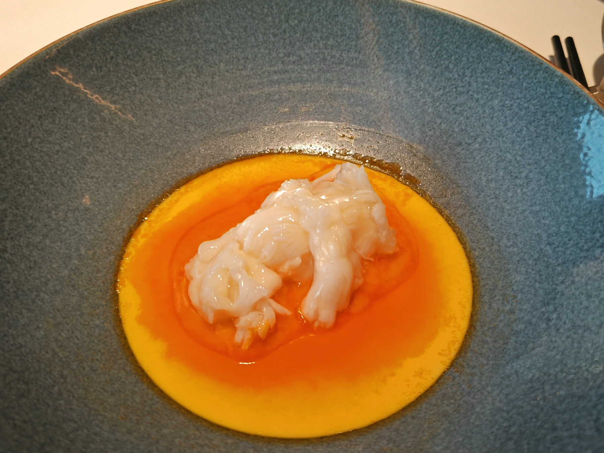

记录一下最近吃过的好吃的
声明：这不是一个严谨的美食评测栏目，主要是为了安放一些我对食物的记忆，记录吃饭的感受而已。我对美食的评价原则是：食物的口味>性价比>环境>服务，每个餐厅也会从这几个维度简单的评价一下。记录的餐厅没有限制，只要是给我留下深刻印象的都会放（当然是好的印象为主，因此也可以视为一个美食推荐栏目）
1.新荣记（建国门外大街店）

新荣记的名号无需多言，这顿饭在我现在吃过的里面可以算top3了，不仅是菜好，配的酒也好（随便挑了个澳洲长相思干白，200左右一瓶，酒我喝不太明白就不评价了，干白配海鲜类怎么都好喝），后来再吃新荣记因为没有好的配酒导致体验差了不少。
这次点的是建国门店598的套餐，加了两块仔排，人均700多。全场最佳菜品是前菜的熏带鱼腩，类似本帮菜熏鱼的做法，但是选用了肉质更加细嫩的带鱼腩，入口外壳迅速化开，带鱼的鲜味混合着外壳吸满的熏鱼酱汁的甜蜜充满口腔，为这一餐开了个很好的头。其他印象深刻的菜品有配图的这道海胆酱虾球蒸蛋，香味浓郁复合，吃起来非常满足；鮸鱼饺子是最大的惊喜，本来对主菜没啥期待的，但是这个饺子真的很爆：鱼肉是整块的而非打散，鲜味浓郁，汁水充足，为一餐画上了完美的句号。其他菜品如沙蒜豆面家烧鱼无功无过，没什么大的惊喜，只能算符合价格。
第二次吃新荣记换菜单了，价格还是598但是加入了很多应季的菌菇元素，我个人觉得融合的比较一般，还把我最爱的鱼饺子换掉了，sad。而且这次的配酒是某人带的神秘白酒，虽然很贵但是不怎么配海鲜。以及吃饭前突然被临时告知下午就要开会，三重debuff下导致这餐的体验比较一般。
但是总而言之新荣记依然是我吃过的餐厅里排名top3的了（毕竟价格在这摆着x），之后打算去米三的那家店尝尝别的套餐。
总结：
人均～700左右；环境顶级，正对CCTV；有侍酒服务，但是15%服务费还是略贵；食物口味绝对的顶级。在我的评价体系中这就算是一家典型的满分餐厅了。